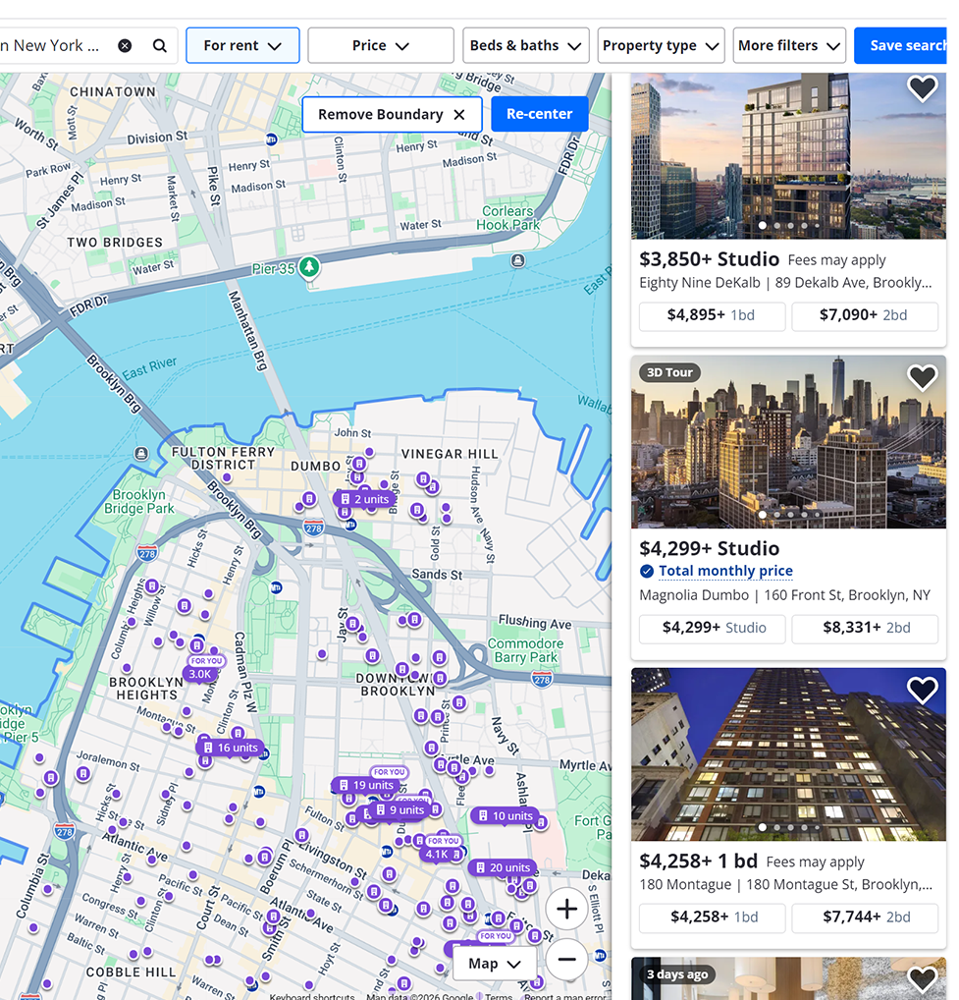
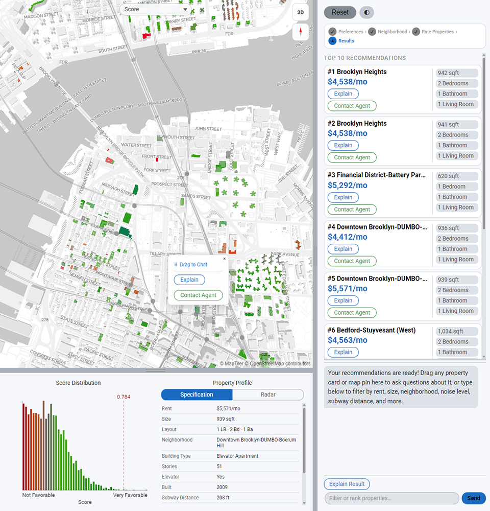
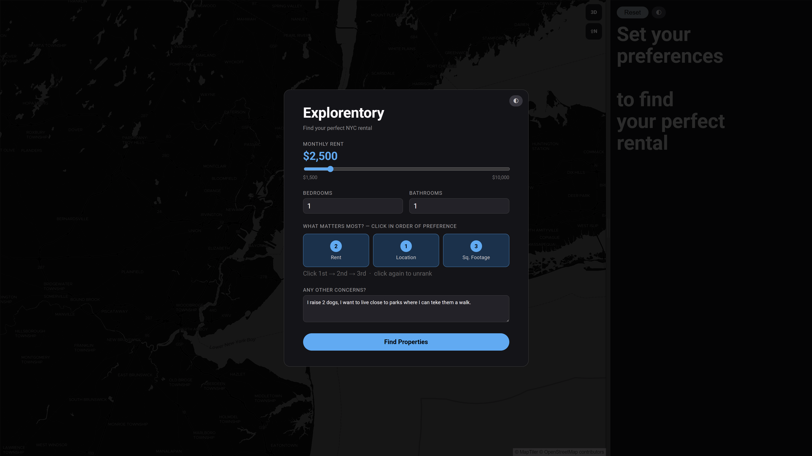
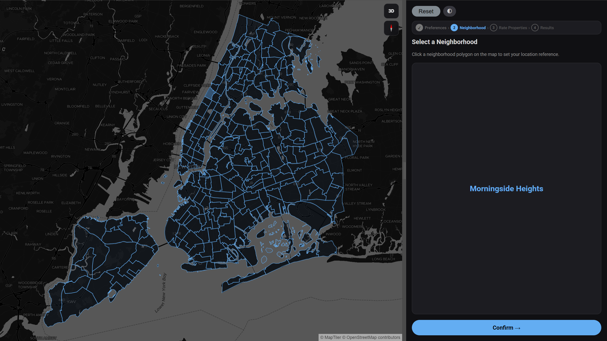
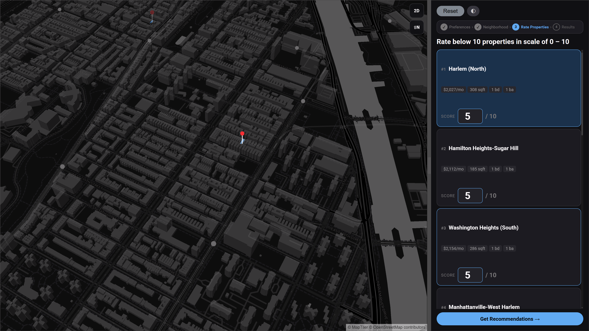
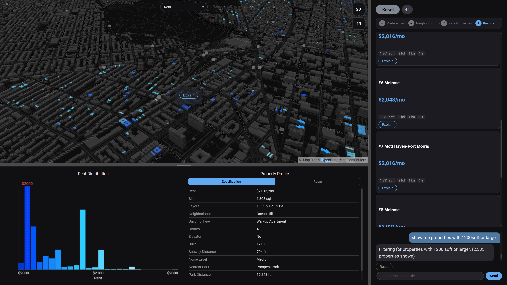

NYC RENTAL DISCOVERY PLATFORM
AI · Machine Learning · Geospatial Visualization
How can an AI-assisted experience translate natural language preferences into personalized rental recommendations?
How can machine learning adapt rental recommendations based on user behavior and implicit feedback?
How can interactive visualizations clarify housing information and make spatial trade-offs legible?

Zillow · Traditional Platforms

Explorentory
PostgreSQL
+ PostGIS
~4M synthetic NYC units
260 neighborhood polygons
GeoJSON boundary data
Geospatial indexing
Backend
6 REST endpoints
OLS regression (scikit-learn)
OpenAI Responses API
PostGIS spatial queries
Vanilla JS
Frontend
MapLibre GL polygons
Canvas-based charts
Client-side LLM filtering
Snapshot state history




~4M
Properties
in Database
Rule-Based
Filter
→
Rent ±20%/+5%
BD ±1 · BA ±1
~100K
Candidates
Shortlisted
Rule + ML
Scoring
→
50% rule weight
50% OLS regression
5,000
Top Results
Surfaced
AI-Assisted
Exploration
→
Chat · Map
Cards · Radar
You
Explore,
Compare & Decide
Three Methods of Machine Decision-Making
1960s – 1990s
Rule-Based
Filter
2000s – 2010s
Classical ML
(OLS Regression)
2020s →
AI Assistive
Exploration